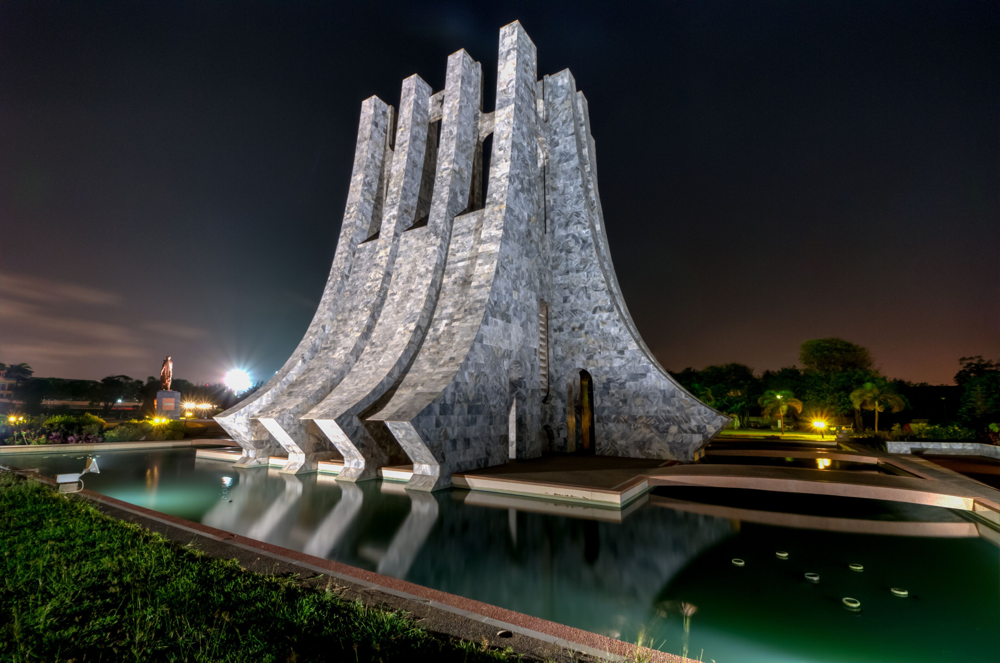
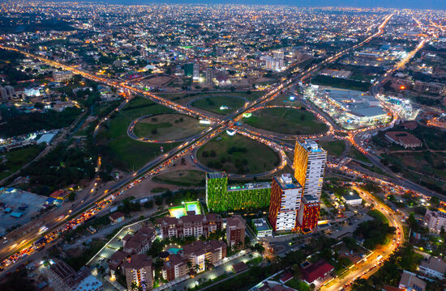
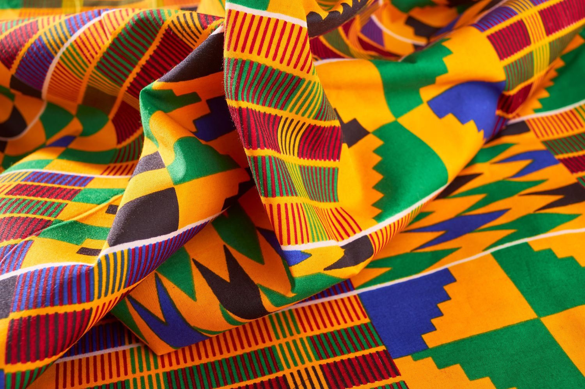
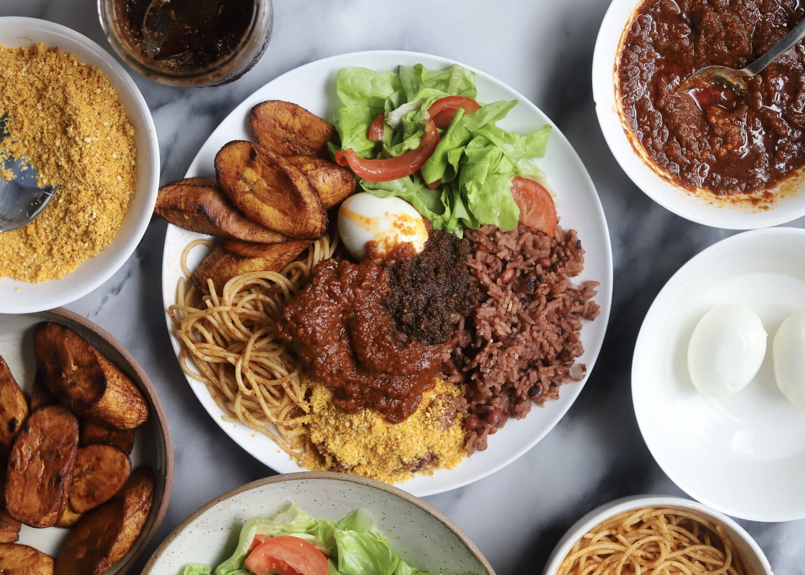
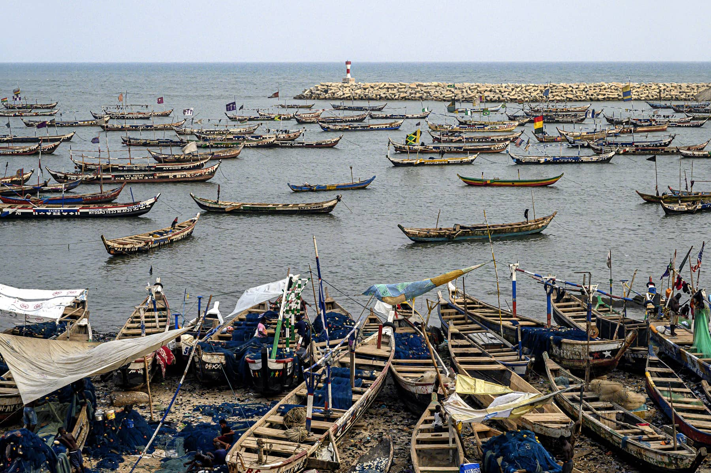

Top Attractions
From the Pan-African history of Kwame Nkrumah Park to the ocean-side energy of Labadi Beach, the city's must-see landmarks, explained.
Explore Attractions →
Accra is a city of layers. Ghana's capital sits where centuries of history meet a surging contemporary energy. From the colonial-era streets of Jamestown and the grandeur of Independence Square, to the jazz bars of Osu and the art galleries putting Ghanaian artists on the world stage.
This guide is for travelers who want more than the highlights reel. Whether you're arriving for the first time or returning to reconnect with your roots, Accra rewards those who look carefully. Dig in.


From the Pan-African history of Kwame Nkrumah Park to the ocean-side energy of Labadi Beach, the city's must-see landmarks, explained.
Explore Attractions →
Accra's food scene runs from legendary chop bars serving waakye at dawn to upscale restaurants that have been feeding the city for 20+ years.
Find Good Food →
Nowhere in Accra is without color, music, and casual camaraderie. Browse the city through images from Jamestown's fishing boats to Independence Square.
View Gallery →